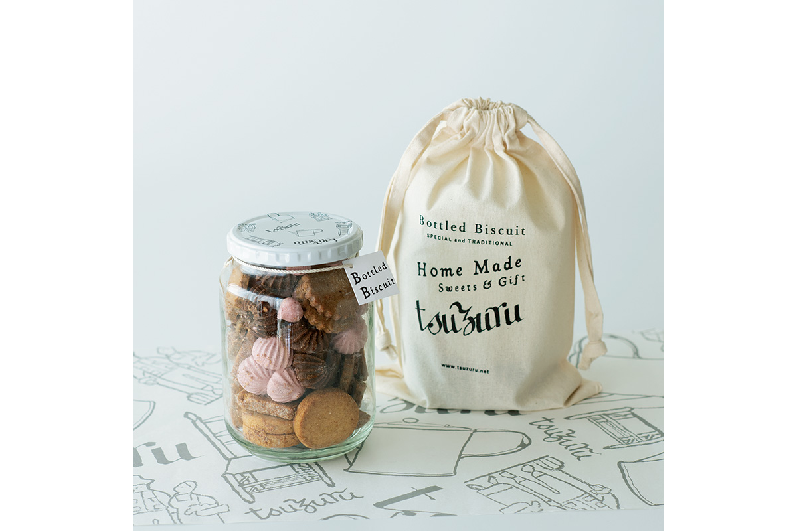
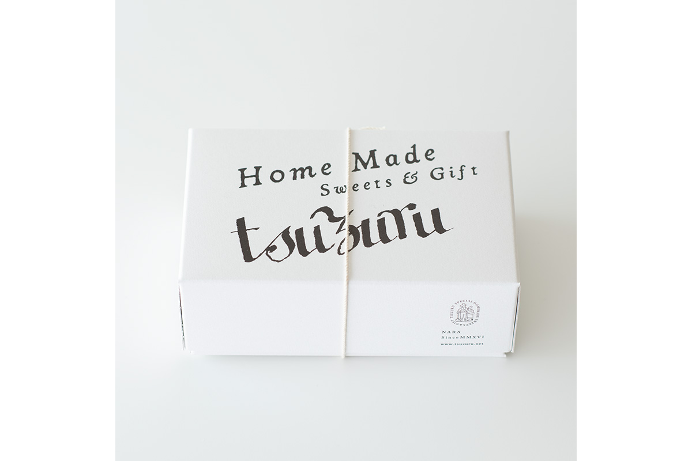
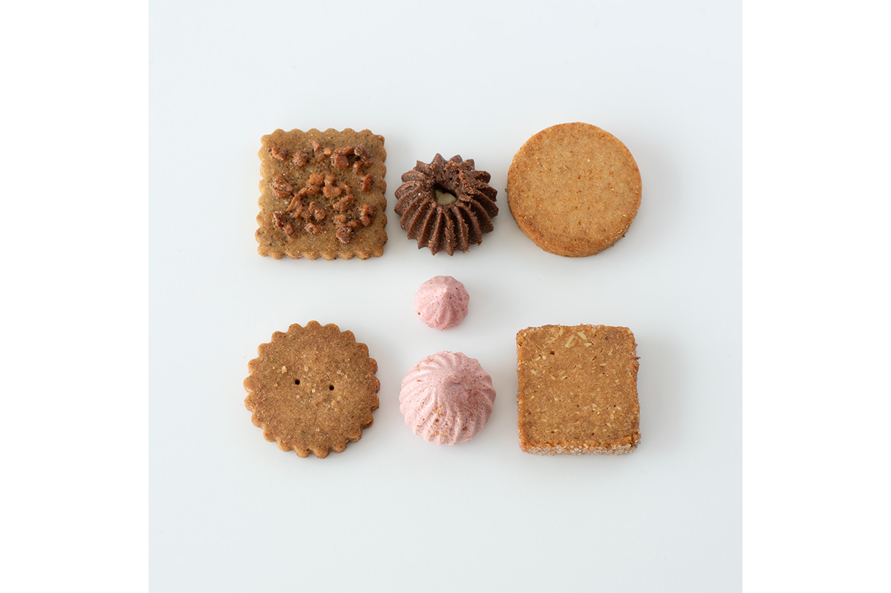
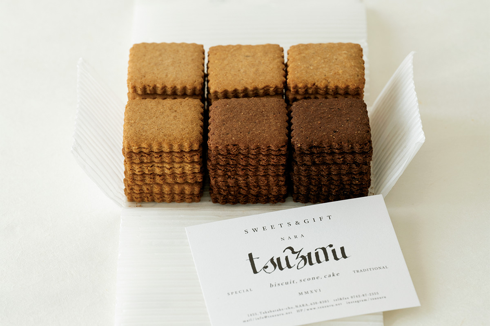
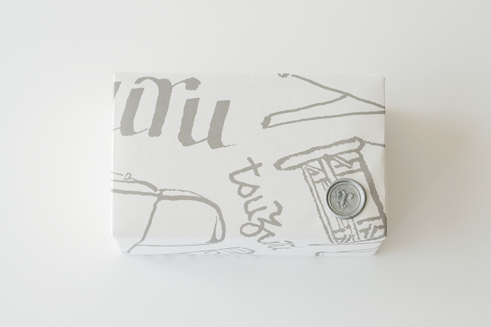
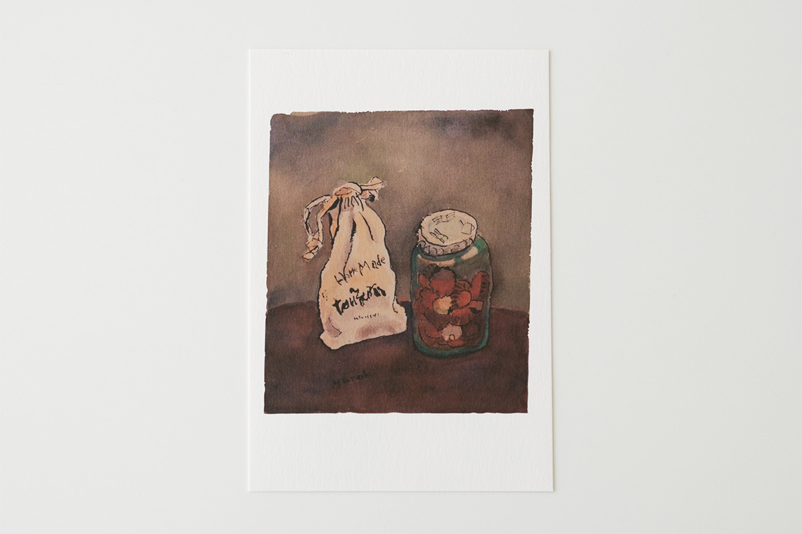

Префектура Нара · город Нара · сладости
tsuzuru: печенье в упаковке мастера мингэй Самиро Юноки

В тихом жилом квартале Нары, недалеко от храма Синъякуси-дзи, работает кондитерская tsuzuru. Её печенье пахнет травами и пряностями, а логотип, обёртки и крышки банок нарисовал Самиро Юноки, один из последних великих мастеров движения мингэй.
Мастер
Художник, которого уговорили письмом
У японских ремёсел и японских сладостей давняя дружба: хорошая коробка конфет здесь бывает не менее ценной, чем её содержимое. История tsuzuru как раз об этом.
Движение мингэй, японского народного искусства, основал философ Мунэёси Янаги (1889–1961). Он учил видеть красоту в простых вещах, сделанных руками безымянных мастеров: в посуде, тканях, корзинах. В 1948 году молодой Самиро Юноки (1922–2024), учившийся трафаретному крашению у мастера Кэйсукэ Сэридзавы (1895–1984), показал Янаги свою первую работу, ткань в духе окинавского бингата. Случай небывалый: её сразу взяли в собрание токийского Музея народных ремёсел.
Юноки стал последним из видных мастеров мингэй, кто лично знал Янаги. В 2020 году ему было 98 лет, и он по-прежнему работал: регулярно показывал новые вещи в том же музее, а в 2019 году устроил выставку в Париже. С годами его работы становились всё свободнее и смелее, и у него появлялись новые поклонники.
В 2016 году молодая пара открыла в Наре кондитерскую tsuzuru. Хозяева так любили работы Юноки, что написали ему длинное письмо и попросили сделать для них упаковку. Он согласился. Его рисунки есть на логотипе магазина, на крышках банок, на обёрточной бумаге, на открытках, мешочках и даже на тонкой бумаге, в которую заворачивают печенье.

Банка
Bottled Biscuit
Сладости tsuzuru трудно спутать с другими: травы и пряности здесь сочетают так неожиданно, что каждое печенье немного удивляет. Bottled Biscuit, печенье в стеклянной банке, лучше всего показывает этот стиль. В банке шесть видов: три постоянных и три сезонных, ароматных от трав и специй. Вместе с мешочком из ткани туаль такая банка стоила 5000 иен в 2020 году.

Ассорти
Жестяная коробка «градация»
Кондитерская стоит в тихом жилом квартале рядом с храмом Синъякуси-дзи. Выпечкой здесь занимается кондитер, одна из хозяев магазина. Вкусно у неё всё, но первым стоит попробовать ASSORTED COOKIES GRADATION: печенье из спельты, древнего сорта пшеницы, шести вкусов, уложенных в коробку так, что они плавно переходят один в другой.

Глиняную посуду в Японии называют «якимоно», буквально «обожжённое». Эту коробку можно назвать съедобным якимоно: в печенье чувствуется земля, на которой выросло зерно.


В 2022 году Юноки исполнилось сто лет. К юбилею Музей народных ремёсел в Токио показал большую выставку его работ, она шла с 13 января по 2 апреля 2023 года.
tsuzuru
- Адрес
- префектура Нара, город Нара, Такабатакэ-тё, 1455
- Телефон
- +81 742-87-2355
- Часы работы
- 9:00–17:00, только по предварительной записи
- Выходные
- со вторника по пятницу
Фото: Вакана Баба.